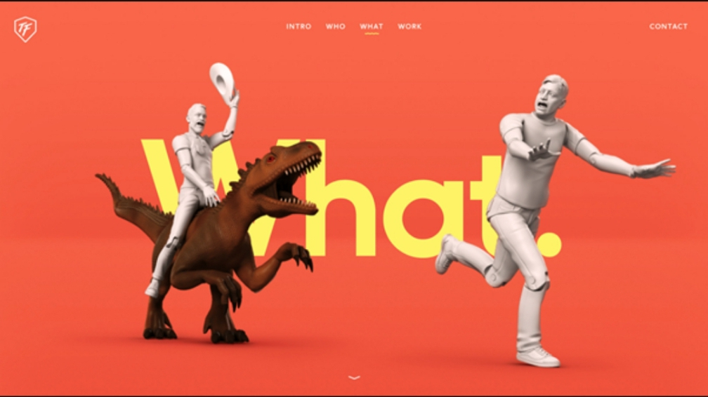

White Space and Clean Design
xdadobe
xd.adobe.com ToyFight uses a bright color for the background to act as white space
Despite beign called "white", this space doesn't literally need to be white. Any type of space that serves as a background for the content or funtional elements can be considered white space.
Alignment
Adobe
adobe.comThe bigger word which is like the heading at the top of he image aligned with the word smaller word in lower part of the Image following the straight line
Alignment is an important principle of design. It helps create a sharp, ordered appearance for ultimately better designs by ensuring your various elements have a pleasing connection with each other. Center, right, or left-aligned text is the most common, but you can also align text to other objects in your graphic. If something looks not quite right in your design, check your alignment.